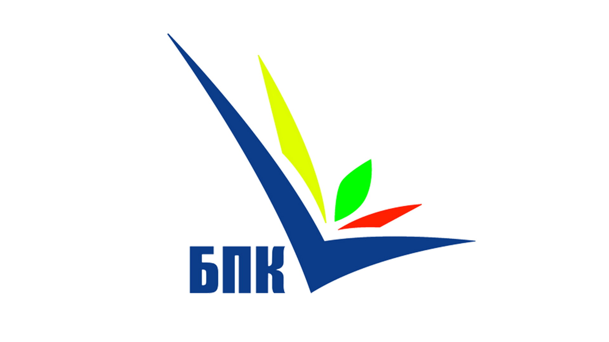

|  |
Портфолио практических работ
Матвийчук Даниила Юрьевича
Представлены работы с использованием основ языка веб-программирования JavaScript
Дата:
Время:
|
Меню сайта
|
Фотогалерея
© Матвийчук Даниил , 2024
студент 3 курса специальности 44.02.06. Профессиональное обучение (по отраслям) - по отрасли информатика и вычислительная техника
|
|
|